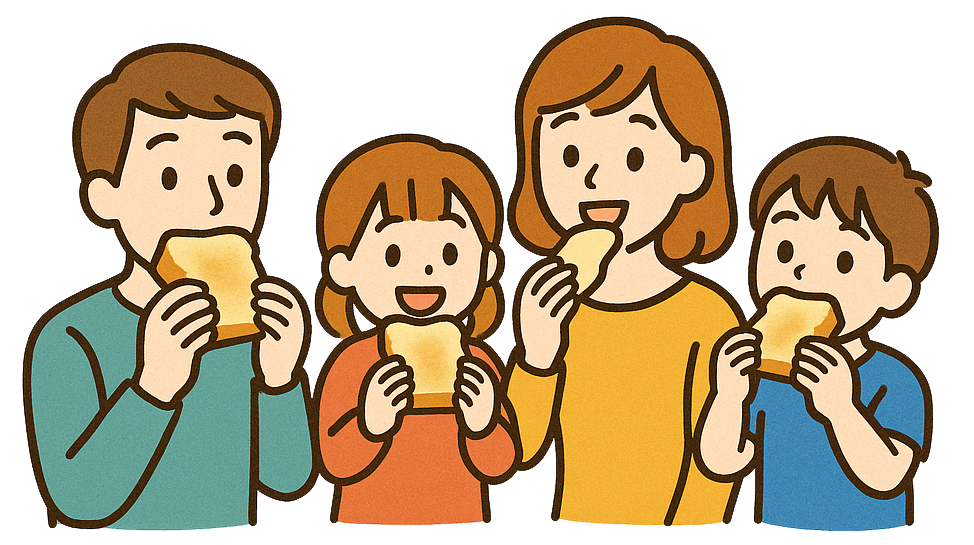

概要
本ドキュメントは、提供された複数のソースに基づき、日本の食パンに関する主要なテーマ、特徴、歴史、健康面での考慮事項、物流、そして将来展望について詳細にレビューしたものです。日本の食卓に不可欠な存在となった食パンの多角的な側面を理解することを目的とします。
主要な食パンブランドと特徴
日本の食パン市場は非常に多様で、大手メーカー、コンビニエンスストアのプライベートブランド（PB）、専門店、そして街のパン屋がそれぞれの個性を打ち出しています。
パスコ「超熟」
「湯種製法」によるもっちりとした食感と小麦本来の甘み、香りが特徴。「添加物を極力使わない」製法も支持され、「素材の味を重視する人」や「しっとり・もっちり系が好きな人」向け。生食でもトーストでも美味しく、LDKのランキングで1位を獲得するなど、味とコスパのバランスが良いと評価されています。
ヤマザキ「ロイヤルブレッド」
良質な小麦粉を使用し、風味豊かでキメが細かく、しっとりとした食感が特徴。「トーストするとサクッとした食感も楽しめます」。ヤマザキの主力商品の一つで、「バランスの取れた味わいを求める人、トースト派にも生食派にも」適しており、シンプルでどんなアレンジにも合う定番品。バターの風味が強いという声もあります。
フジパン「本仕込」
「石窯オーブン」で焼き上げることで、外はパリッと、中はもっちりとした食感を実現（製法は時期や工場により異なる場合あり）。「小麦の風味を活かし、飽きのこない味わいが特徴」で、「香ばしさや小麦の風味を重視する人」や「伝統的な製法に魅力を感じる人」向け。湯種製法によるもちもち感と弾力が特徴で、コスパと完成度が高いと評価されています。
コンビニ各社PB食パン
セブンイレブン「セブンブレッド」「金の食パン」、ファミリーマート「ファミマ・ザ・パン」、ローソン「マチノパン」など。「価格競争力がありつつ、近年は品質向上に注力」。「金の食パン」のような高級路線も展開。少量パックが多く、「単身者にも便利」。手軽さが重視され、品質は大手メーカーにやや劣るものの利便性が高い。ファミリーマート「白生パン」のような生食特化の新商品も。
イオンなどPB食パン (トップバリュなど)
「コストパフォーマンスに優れ、日常使いに適した商品が多い」。種類も豊富で、「価格を重視する人、大容量を求めるファミリー層」に適しています。低価格ながら品質が安定し、健康志向の選択肢も増加。
食パン専門店のフランチャイズ系 (乃が美、嵜本、銀座に志かわ など)
「高級食パンブームの火付け役」。厳選素材と独自製法により、「生」で美味しい、耳まで柔らかい、口どけの良い食パンを提供。「特別な日のパン、贈答用、とにかく美味しいパンを求める人」向け。甘みとふわふわ感が際立ち、トーストせずそのまま食べることを推奨する店舗が多い。
街のパン屋さんの自家製食パン
「お店ごとの個性」が強く、「少量生産ならではのこだわり」。焼き立てが魅力で、「個性的な味を求める人、地元のパン屋さんを応援したい人、焼き立てを楽しみたい人」に適しています。無添加や国産小麦など素材にこだわる店が多く、日持ちは短いが安心感があります。
健康面での考慮事項と毎日食べ続けることによる問題
食パンは毎日食べるものだからこそ、健康面への配慮が必要です。
- 原材料表示の確認: 「添加物（イーストフード、乳化剤、保存料など）が使われているか確認」し、「なるべく少ないものを選ぶのも一つの考え方」。油脂の種類（ショートニング、マーガリン、バター）や、糖分・塩分の量も確認。
- 栄養の偏り: 食パンだけでは栄養が偏るため、「野菜やタンパク質源（卵、肉、魚、大豆製品など）と組み合わせてバランスの良い食事を」。食パンはアミノ酸スコアが51と低く、他の食品で補う必要あり。
- 糖質の過剰摂取: 白い食パンはGI値が高めで、食べ過ぎると「血糖値の急上昇を招き、長期的には肥満や生活習慣病のリスクを高める可能性」。菓子パンやトッピング過多は特に注意。
- 塩分の過剰摂取: 「1枚（6枚切り）あたり0.5g～0.8g程度の塩分が含まれることが多い」。他の食事とのバランスも考慮。
- グルテン過敏症・小麦アレルギー: 体質によっては小麦に含まれるグルテンが不調の原因になることも。
- 健康的な選択: 健康を意識するなら、「全粒粉やライ麦パンなど、食物繊維やミネラルが多いものを選ぶと健康的」。
生活スタイル別おすすめ食パン
独身（1人暮らし）
「コンビニPBの2～3枚入り少量パック、個包装タイプ、日持ちのするロングライフパン」がおすすめ。「食べきれる量、保存のしやすさ」が重要で、色々な種類を試しやすいのもメリット。冷凍保存も活用しましょう。
家族（少人数: 2～3人）
「スーパーの1斤（またはハーフサイズ）、好みに合わせて大手メーカー品やパン屋さんの食パン」がおすすめ。「消費ペースに合わせてサイズを選び、鮮度が落ちる前に食べきれるように」し、家族の好みに合わせて選ぶ楽しみも。パスコ「超熟」やフジパン「本仕込」のような1斤サイズが適しています。
家族（大人数: 4人以上）
「スーパーPBの大容量パック（2斤分など）、コストパフォーマンスの良い大手メーカー品」がおすすめ。「消費量が多いので、コスパは重要」。ホームベーカリーで手作りするのも経済的で楽しい選択肢。食べ盛りの子供がいる場合は、「栄養価の高い全粒粉パンなどを取り入れるのも良い」でしょう。
共通のポイント: 「食べきれない分は1枚ずつラップして冷凍すれば、美味しさを保てます」。また、「色々な種類の食パンを試して『我が家の定番』を見つけるのが一番」です。
日本の食卓での食パン普及の歴史
- キッカケ (戦後の食糧難とアメリカ文化の流入): 第二次世界大戦後、「食糧難の中でアメリカから援助物資として小麦粉が大量に供給」され、進駐軍を通じてパン食文化が持ち込まれました。
- 学校給食でのパン食普及: 「1950年代から学校給食でパン（主にコッペパン）が提供されるようになり、子供たちがパンに親しむようになりました。これがパン食を一般家庭に広める大きな要因」。
- 高度経済成長期 (1960年代～): 生活様式の洋風化が進み、朝食にパンを食べるスタイルが定着。トースターなどの家電製品の普及も後押しし、製パン技術も向上して工場での大量生産が可能に。
- 多様化の時代 (1980年代～): 食パンの種類が増え、コンビニでも手軽に購入可能に。食パン専門店も登場。
- 健康志向の高まり (2000年代～): 全粒粉パンやライ麦パン、低糖質パンなど、健康を意識した食パンが登場。
- 高級食パンブーム (2010年代後半～): 素材や製法にこだわった「生食パン」などがブームとなり、食パンの価値観が多様化。
- 現在: 「日常食としての地位を確立しつつ、嗜好品としての側面も持ち合わせ、様々なニーズに応える商品が開発されています」。
食パンに関するエピソードや雑学
- 「パン」の語源: ポルトガル語の "pão" (パォン) が由来。
- 食パンの「斤」の単位: 日本独自の単位で、元々はイギリスの「ポンド (pound)」が由来とされ、「製パン業界の慣習で1斤あたり340g以上」。
- 角食パンと山型食パン: 角食パンは蓋をして焼くためキメが細かくしっとり、山型食パンは蓋をせず焼くためふっくらサクサク。
- パンの記念日: 4月12日。1842年に江川太郎左衛門英龍が「兵糧パン」を焼いた日。
- 日本の食パンの独自性: 「日本の食パンは世界的に見ても非常に柔らかく、甘みが強い特殊な存在」。
- 「食パン」の名称: 「主食用のパン」という意味で日本独自の呼び方。
- SNSで話題の食べ方: 「悪魔トースト」や「ルマンド食パン」。
- スライス厚: 3枚切り〜10枚切りまで選択可能で、日本独自の特徴。
白い食パン以外の種類
ライ麦パン
ライ麦粉を主原料とし、「独特の酸味とどっしりとした食感、深い風味が特徴」。「食物繊維やビタミンB群が豊富」で、ドイツや北欧で伝統的。低GI値。
全粒粉パン
「小麦の表皮（ふすま）、胚乳、胚芽を全て粉にした全粒粉を使用」し、「食物繊維、ビタミン、ミネラルが豊富」。「香ばしい風味と少しパサっとした食感」。GI値が白いパンより低い傾向。
米粉パン
米粉を主原料とし、「もっちりとした食感が特徴」。小麦アレルギーの人やグルテンフリーを求める人にも選択肢。
その他
雑穀パン、胚芽パンなどがあり、それぞれ栄養価や風味が異なります。
健康的な食べ方とオススメ
健康に良い食べ方のポイント
- バランスを意識: 「野菜（レタス、トマト等）、タンパク質（卵、肉、魚等）、良質な脂質（アボカド等）を組み合わせる」。
- GI値を緩やかに: 「食物繊維の多い野菜やタンパク質と一緒に食べることで、血糖値の急上昇を抑える効果」。
- 糖分・塩分をコントロール: ジャムやバター、マヨネーズ等の使用は控えめに。
オススメな食べ方
オープントースト（アボカドと目玉焼きなど）、具だくさんサンドイッチ、フレンチトースト（ヘルシー版）、ディップで楽しむ（フムス、ワカモレなど）、シンプルに（オリーブオイルと塩）。
1日に食べて良い量
個人の年齢、性別、活動量等で異なりますが、「一般的な目安として、1食あたり6枚切りで1枚～2枚程度」。食パンは主食（炭水化物源）として考え、1日の炭水化物の必要量の一部として摂取。食べ過ぎると糖質の摂りすぎや栄養の偏りに繋がるため、「パンだけでお腹を満たそうとしない」ことが重要です。
トースト、電子レンジ、そのままの比較
健康面での大きな優劣はありませんが、それぞれ特徴があります。
- トースト: 「表面がサクサク、中はふんわり」。香ばしさが増す。山型食パンやバター・ジャムを塗る場合におすすめ。
- 電子レンジ: 「手軽に温められ、ふわふわ、もっちり」。冷めて硬くなったパンを柔らかくしたい時に。温めすぎ注意。
- そのまま (生食): 「パン本来の風味や甘み、しっとり感を最も楽しめる」。高級食パンやサンドイッチにおすすめ。
食パンと白米の比較（栄養面）
一般的な白い食パンと白米を同重量で比較した場合の傾向です。
| 栄養素 | 白い食パン (約60g) | 白米 (約60g) | 備考 |
|---|---|---|---|
| エネルギー | 約160 kcal | 約100 kcal | 白米の方が水分量が多いため、同重量ならカロリーは低い。 |
| 炭水化物 | 約28g | 約22g | 主成分は糖質。 |
| タンパク質 | 約5g | 約1.5g | 食パンの方がやや多い傾向（小麦粉由来）。 |
| 脂質 | 約3g | ほぼ0g | 食パンは製造時に油脂を使うため。 |
| 食物繊維 | 約1-2g | 約0.2g | 全粒粉パンなら大幅に増える。 |
| 塩分 | 約0.7g | ほぼ0g | 食パンには製造時に塩が使われる。 |
| GI値 | 高め | 高め | 種類や食べ合わせで変わる。全粒粉パンや玄米は比較的低い。 |
| ビタミンB群 | 微量 | 微量 | 全粒粉パンや玄米は比較的豊富。 |
ポイント: どちらが良いというより、それぞれの特性を理解し、バランス良く食事に取り入れることが大切。白い食パンや白米ばかりでなく、全粒粉パンや玄米、雑穀米なども取り入れると栄養価が向上します。
食パンの物流
食パンは多くの国民が毎日消費するため、高度な製造・物流システムに支えられています。
- 24時間体制の大量生産: 大手製パンメーカーは、「多くが24時間体制で稼働し、1日に何十万斤もの食パンを焼き上げています」。
- 鮮度を保つスピード配送: 「パンは鮮度が命」。焼き上がり後すぐに包装され、専用配送網で全国へ。コンビニへは1日複数回配送も。
- フードロス削減への挑戦: AI需要予測、賞味期限表示工夫、値引き販売、フードバンク寄付など。サンドイッチ用のパンの耳の再利用も。
- 気象条件との戦い: 悪天候時でも供給を止めない努力。
- コロナ禍での変化: 内食需要増による消費増など、需給バランスに変化。
- 「日配（にっぱい）」: 製造から24時間以内に店頭に並ぶ超短サイクル物流。
食パンの未来
食パンは今後も進化を続けると予想されます。
- 健康志向の進化: 「全粒粉、ライ麦、低糖質、低GI、高タンパク質、食物繊維強化など、より健康効果を意識した商品が増える」。機能性表示食品やグルテンフリー食パンの多様化も。
- 多様化とパーソナライズ: 素材へのこだわり、ご当地食パン、個別ニーズ対応、サブスクリプション型サービスなど。
- サステナビリティと倫理的消費: フードロス削減、環境配慮、倫理的消費重視。アップサイクルや環境負荷の少ない製法。
- 新しい食感・風味の追求: 製法や発酵技術の進化により、これまでにない食感や風味の食パン登場の可能性。
- テクノロジーの活用: 代替原料、家庭用ホームベーカリー進化、AIレシピ開発、3Dプリンター製造実験など。
結論
食パンは、その手軽さ、多様なアレンジ性、美味しさから、日本の食卓において揺るぎない地位を築いています。健康面では栄養バランスと糖質・塩分摂取量に注意が必要ですが、全粒粉などの選択や、野菜やタンパク質との組み合わせにより、より健康的に楽しむことができます。歴史的に見ても、戦後の混乱期から高度経済成長期を経て、国民食へと成長した興味深い背景があります。物流は高度に発達し、常に新鮮なパンを供給しています。そして、未来に向けて、健康志向、多様性、サステナビリティ、テクノロジーといった要素を取り込みながら、食パンはさらに進化していくことでしょう。日本の食パンの世界は、シンプルでありながら奥深く、今後も目が離せません。
よくある質問 (FAQ)
1. 日本の食パンにはどのような種類やブランドがありますか？
日本の食パン市場は非常に多様です。大手メーカーの定番として、湯種製法でもっちりとした食感と素材の味を活かしたパスコ「超熟」、良質な小麦粉を使用し風味豊かでキメ細やかなヤマザキ「ロイヤルブレッド」、石窯オーブン（※製法は変動あり）で焼き上げ外はパリッと中はもっちりのフジパン「本仕込」があります。これらはスーパーなどで手軽に入手でき、それぞれの食感や風味が異なります。
また、コンビニやスーパーのプライベートブランド（PB）食パンは、価格競争力がありながら近年品質が向上しており、少量パックなど利便性を重視した商品が多いです。セブンイレブン「金の食パン」のような高級路線も存在します。
さらに、高級食パンブームを牽引した食パン専門店のフランチャイズ系（乃が美、嵜本など）は、厳選素材を使用し「生」で食べることに特化した、耳まで柔らかく口どけの良い食パンを提供しています。街のパン屋さんの自家製食パンは、お店ごとの強い個性やこだわり（酵母、配合、焼き方など）が特徴で、焼き立てを楽しめる魅力があります。
2. 食パンを選ぶ際に健康面で気をつけることはありますか？毎日食べ続けることによる問題はありますか？
毎日食べる食パンだからこそ、健康面への配慮は重要です。選ぶ際は、原材料表示を確認し、イーストフードや乳化剤、保存料などの添加物が少ないものを選ぶことも一つの考え方です。油脂の種類（ショートニングやマーガリンか、バターか）、糖分・塩分量も確認しましょう。
毎日食べ続けることによる潜在的な問題としては、栄養の偏りが挙げられます。食パンだけではビタミンやミネラルが不足しがちなので、野菜やタンパク質源（卵、肉、魚、大豆製品など）と組み合わせることが大切です。また、白い食パンは糖質の過剰摂取につながりやすく、GI値が高めなため血糖値の急上昇を招く可能性があります。塩分も意外と含まれているため、他の食事との合計量に注意が必要です。体質によってはグルテン過敏症や小麦アレルギーのリスクも考慮し、気になる場合は専門医に相談しましょう。
3. 生活スタイル別におすすめの食パンの選び方はありますか？
生活スタイルに合わせた選び方をすることで、無駄なく美味しく食パンを楽しむことができます。
- 独身の方には、食べきりやすいコンビニPBの2～3枚入り少量パックや個包装タイプがおすすめです。冷凍保存も活用しやすいです。
- 少人数家族（2～3人）には、スーパーの1斤（またはハーフサイズ）や、家族の好みに合わせた大手メーカー品、パン屋さんの食パンが良いでしょう。消費ペースに合わせてサイズを選びましょう。
- 大人数家族（4人以上）には、消費量が多いので、スーパーPBの大容量パックやコストパフォーマンスの良い大手メーカー品が適しています。食べ盛りの子供がいる場合は、栄養価の高い全粒粉パンなどを取り入れるのも良い選択です。
どのスタイルでも、食べきれない分は1枚ずつラップして冷凍保存すると美味しさを保てます。様々な種類を試して「我が家の定番」を見つけるのも楽しみの一つです。
4. 日本の食卓に食パンが普及したきっかけと歴史を教えてください。
日本で食パンが広く家庭の食卓に普及したのは、主に第二次世界大戦後の出来事がきっかけです。戦後の食糧難の時代に、アメリカから援助物資として大量の小麦粉が供給され、進駐軍を通じてパン食文化が持ち込まれました。
大きな転機となったのは、1950年代からの学校給食でのパン食普及です。子供たちが学校でパンに親しむようになり、それが家庭にも広がる大きな要因となりました。
その後の高度経済成長期（1960年代～）には、生活様式の洋風化が進み、朝食にパンを食べるスタイルが定着。製パン技術の向上による大量生産や、トースターなどの家電普及も後押ししました。1980年代以降は食パンの種類が増え、コンビニでも手軽に買えるように。2010年代後半からの高級食パンブームを経て、現在は日常食としての地位を確立しつつ、多様なニーズに応える商品が開発されています。
5. 白い食パン以外にはどんな種類がありますか？それぞれの特徴を教えてください。
白い食パン以外にも、健康志向や風味の好みに合わせて様々な種類の食パンが普及しています。
- 全粒粉パンは、小麦の表皮、胚乳、胚芽をすべて粉にした全粒粉を使用しており、食物繊維、ビタミン、ミネラルが豊富です。香ばしい風味と少しパサっとした食感が特徴で、GI値が白いパンより低い傾向があります。
- ライ麦パンは、ライ麦粉を主原料とし、独特の酸味とどっしりとした食感が特徴です。食物繊維やビタミンB群が豊富で、ドイツや北欧などで伝統的に食べられています。チーズやハムなど塩味のあるものと相性が良いです。
- 米粉パンは、米粉を主原料としており、もっちりとした食感が特徴です。小麦アレルギーの人やグルテンフリーを求める人にも選択肢となります。
- その他、大麦、キビ、アワ、ゴマなど様々な雑穀を混ぜ込んだ雑穀パンや、小麦の胚芽部分を多く含む胚芽パンなどがあり、それぞれ栄養価や風味、食感が異なります。
6. 食パンの健康に良い食べ方や、おすすめのアレンジはありますか？
食パンは他の食品と組み合わせることで、より健康的でバランスの取れた食事にすることができます。
健康に良い食べ方のポイントは、バランスを意識することです。食パンだけでなく、野菜、タンパク質源（卵、肉、魚、豆製品など）、良質な脂質（アボカド、オリーブオイルなど）を一緒に摂りましょう。食物繊維の多い野菜やタンパク質と一緒に食べることで、血糖値の急上昇を抑える効果も期待できます。ジャムやバターなどの糖分・塩分の多いトッピングは控えめにし、ハーブやスパイスを活用するのも良いでしょう。
おすすめの食べ方としては、全粒粉パンを使ったオープントーストにアボカドと目玉焼きを乗せたり、レタス、トマト、鶏むね肉などを挟んだ具だくさんサンドイッチがあります。ヘルシー版フレンチトーストとして、卵液に豆乳を使い砂糖を控えめにするのも良いでしょう。シンプルに良質なオリーブオイルと少量の塩でパン本来の味を楽しむのもおすすめです。
7. 食パンの「トースト」「電子レンジ」「そのまま」は、どれが一番良いですか？
食パンを「トーストする」「電子レンジで温める」「そのまま食べる」のどれが良いかは、パンの種類や個人の好みによって異なります。健康面での大きな優劣はありません。
- トーストすると、表面がサクサク、中はふんわりとなり、香ばしさが増します。山型食パンや少しパサつきが気になるパン、バターやジャムを塗る場合におすすめです。
- 電子レンジは手軽に温められ、ふわふわもっちりとした食感が復活します。冷めて硬くなったパンを柔らかくしたい時に短時間で使用するのが適していますが、温めすぎると硬くなったりベチャッとしたりすることがあります。
- そのまま（生食）は、パン本来の風味や甘み、しっとりとした食感を最も楽しめます。高級食パン（生食パン）や元々しっとりしているパン、サンドイッチにする場合におすすめです。
加熱によって一部の栄養素がわずかに失われる可能性はありますが、それよりも何をトッピングするか、何と一緒に食べるかの方が健康への影響は大きいです。好みや状況に合わせて食べ方を選ぶのが一番です。
8. 食パンは毎日どのくらい食べても大丈夫ですか？白米と比較した栄養面の違いは？
1日に食べて良い食パンの量は、個人の年齢、性別、活動量、体格、他の食事内容によって大きく異なります。一般的な目安としては、1食あたり6枚切りで1枚～2枚程度と考えられます。食パンは主食（炭水化物源）なので、1日の炭水化物の必要量の一部として捉え、他の食事内容とのバランスを見ながら調整が必要です。活動量の多い人はもう少し多くても良い場合があり、ダイエット中や血糖値が気になる人は量を抑えたり、全粒粉パンを選んだりする工夫が必要です。パンだけでお腹を満たそうとすると栄養が偏りやすいため、必ず他の食品と組み合わせましょう。
食パン（白いもの）と白米を栄養面で比較すると、どちらも炭水化物が主成分ですがいくつかの違いがあります。おおよそ同じ重量で比較した場合、食パンは製造時に油脂や塩分が加えられるため、脂質や塩分が白米よりも多く含まれる傾向があります。また、タンパク質は食パンの方がやや多い場合があります。食物繊維はどちらも精製されているため少なめですが、全粒粉パンや玄米は豊富です。GI値はどちらも高めですが、種類や食べ合わせで変動します。どちらが良いというより、それぞれの特性を理解し、バランス良く食事に取り入れることが大切です。白い食パンや白米だけでなく、全粒粉パンや玄米なども取り入れることで栄養価を向上させることができます。
日本の食パンの歴史タイムライン
- 16世紀：ポルトガル宣教師によって日本にパンが伝来。
- 明治時代：西洋文化流入と共に都市部でパン食が広まる。
- 大正〜昭和初期 (1920年代頃)：食パン専門のパン屋が登場、家庭にも浸透開始。
- 第二次世界大戦後 (1940年代)：アメリカからの小麦援助、学校給食にパン（コッペパン）本格導入。
- 1950年代〜1960年代（高度経済成長期）：生活様式の洋風化、朝食にパンが定着。工場での大量生産開始。
- 1970年代：大手メーカーが大量生産体制を確立、全国に普及。
- 1980年代以降：食パン種類増加、コンビニでも販売。食パン専門店も登場。
- 1998年：パスコ「超熟」発売。
- 2000年代以降：健康志向の高まりで全粒粉パン等が登場。
- 2010年代後半〜 (2013年以降)：「生食パン」ブーム、高級食パン専門店急増。
- 2018年〜2020年頃：高級食パン専門店の開店ラッシュ。
- 2020年頃〜（コロナ禍）：内食需要増で家庭消費増加。
- 現在：日常食かつ嗜好品。健康志向、多様化、サステナビリティ、技術革新が進む。
- 2025年：ファミリーマート「白生パン」など新商品登場。
主要な登場人物（ブランド・店舗形態など）
- パスコ (敷島製パン)：「超熟」が主力。湯種製法、添加物抑制。
- ヤマザキ (山崎製パン)：「ロイヤルブレッド」が主力。安定品質。災害時支援も。
- フジパン：「本仕込」が主力。石窯オーブンや湯種製法。
- コンビニ各社 (セブン、ファミマ、ローソン等)：PB食パン展開。価格競争力と品質向上。少量パック。
- イオンなどのプライベートブランド (PB)：「トップバリュ」等。コスパ重視、種類豊富。
- 食パン専門店 (乃が美、嵜本、銀座に志かわ等)：高級食パンブームの火付け役。生食特化、厳選素材。
- 街のパン屋さんの自家製食パン：個性豊か、少量生産、焼き立て。
- 江川太郎左衛門英龍：1842年「兵糧パン」製造。「パンの記念日」由来。
- BASE BREAD (ベースフード株式会社)：「完全栄養パン」展開。健康志向層向け。